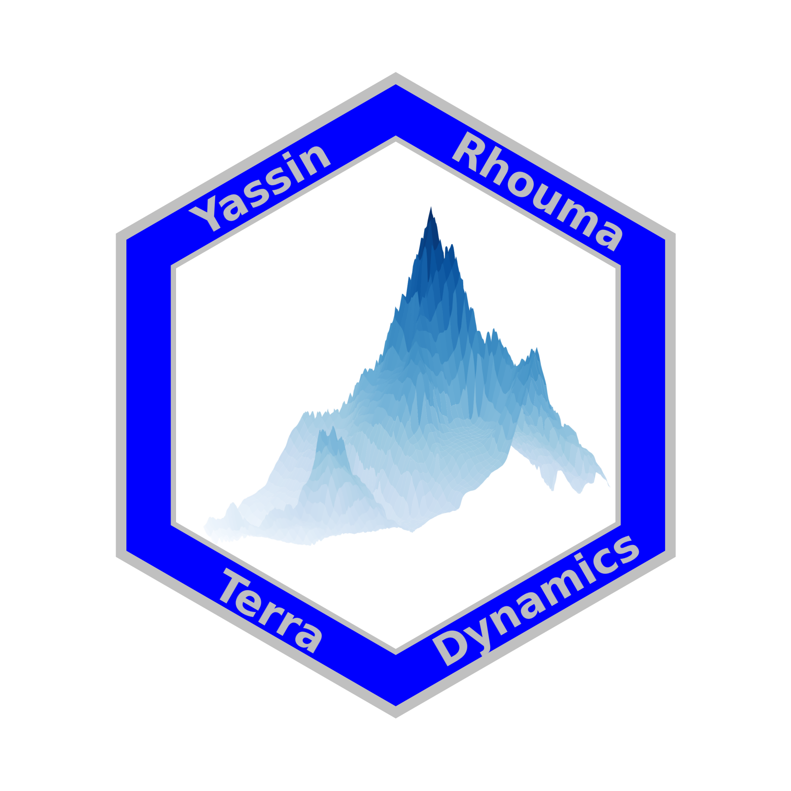

library(sf)
library(sfnetworks)
library(tidygraph)
library(dplyr)
library(ggplot2)
library(scales)
library(tidyr)
library(gridExtra)
# Set path to geodata
Sys.setenv(GEODATA = "/home/rhoumyas/data/geodata")
# Construct the file path
gpkg_path <- file.path(Sys.getenv("GEODATA"), "veloland.gpkg")
Solution for Network Analysis
Introduction
In this file I am going to present my solutions for the Network Analysis exercise.
Centrality
In this task, I will analyze the cycle network of Switzerland using R. The dataset comes from the Federal Roads Office FEDRO (ASTRA).
The goal is to compute different centrality measures (degree, betweenness and closeness) for the nodes in the network and to visualize the results. To do this, I will follow these steps:
Setting up my work environment
In this step, I loaded all the necessary libraries for spatial analysis, network construction, data manipulation, and plotting. I also defined a consistent file path to my geodata folder so I could easily access the dataset throughout the project. This setup ensures that all required tools and data locations are ready before starting the analysis.
Loading the cycling network data using sf
Here, I imported the cycling network data from the GeoPackage file using st_read(). This step brings the raw spatial data into R as an sf object.
# Read the .gpkg file
veloland <- st_read(gpkg_path, drivers = 'GPKG')options: GPKG
Reading layer `veloland' from data source
`/home/rhoumyas/data/geodata/veloland.gpkg' using driver `GPKG'
Simple feature collection with 2066 features and 1 field
Geometry type: LINESTRING
Dimension: XY
Bounding box: xmin: 2485756 ymin: 1076723 xmax: 2837853 ymax: 1297683
Projected CRS: CH1903+ / LV95Converting the data into an undirected network using sfnetworks
In this step, I transformed the spatial dataset into a network object using as_sfnetwork(). This converts the line geometries into a graph structure where intersections and connections can be analysed. I set the network to be undirected because cycling routes allow movement in both directions.
# Creating the network
veloland_net <- as_sfnetwork(
veloland,
directed = FALSE # -> undirected
)
# Looking at the result
veloland_net# A sfnetwork with 1416 nodes and 2066 edges
#
# CRS: CH1903+ / LV95
#
# An undirected multigraph with 1 component with spatially explicit edges
#
# Node data: 1,416 × 1 (active)
geom
<POINT [m]>
1 (2627081 1223967)
2 (2627046 1223984)
3 (2622120 1259428)
4 (2622077 1259420)
5 (2664742 1215321)
6 (2664729 1215323)
# ℹ 1,410 more rows
#
# Edge data: 2,066 × 4
from to length geom
<int> <int> <dbl> <LINESTRING [m]>
1 1 2 39.1 (2627081 1223967, 2627073 1223970, 2627062 1223975, 262705…
2 3 4 44.1 (2622120 1259428, 2622113 1259426, 2622110 1259425, 262210…
3 5 6 15.0 (2664742 1215321, 2664742 1215322, 2664741 1215322, 266474…
# ℹ 2,063 more rowsCalculating different measures of centrality
Here, I computed three different centrality measures: degree, betweenness, and closeness. These metrics describe different aspects of how important or central each node is within the network. I used edge length as a weight so that longer or shorter routes influence the calculation of shortest paths and connectivity.
veloland_net <- veloland_net %>%
activate(nodes) %>%
mutate(
degree_centrality = centrality_degree(weights = length),
betweenness_centrality = centrality_betweenness(weights = length),
closeness_centrality = centrality_closeness(weights = length)
)Converting back to sf objects
After calculating the network measures, I converted the network back into standard sf objects for both nodes and edges.
nodes_sf <- veloland_net %>%
activate(nodes) %>%
st_as_sf()
edges_sf <- veloland_net %>%
activate(edges) %>%
st_as_sf()Assign the values to the edges
In this final preparation step, I aggregated node-level values back onto the edges by taking the mean. This makes it so that each edge has the centrality information derived from its connected nodes. It allows the final visualisation to show centrality directly on the cycling network lines.
edges_sf <- aggregate(nodes_sf, edges_sf, FUN = mean)Plot the maps
At the beginning, I first visualised all three centrality measures in their raw form to get a basic sense of how they behave across the network. This already made it clear that the measures were not directly comparable, because each one had a very different scale and distribution. Some values were extremely concentrated near zero, while a few edges had much higher values.
ggplot(edges_sf) +
geom_sf(aes(color = betweenness_centrality), size = 0.4) +
scale_color_viridis_c(option = "turbo") +
theme_void() +
theme(plot.margin = margin(0, 0, 0, 0))
ggplot(edges_sf) +
geom_sf(aes(color = closeness_centrality), size = 0.4) +
scale_color_viridis_c(option = "turbo") +
theme_void() +
theme(plot.margin = margin(0, 0, 0, 0))
ggplot(edges_sf) +
geom_sf(aes(color = degree_centrality), size = 0.4) +
scale_color_viridis_c(option = "turbo") +
theme_void() +
theme(plot.margin = margin(0, 0, 0, 0))


My first attempt to improve the visualisation was to transform the data using log scaling and also to try quantiles. The idea was to reduce skewness and make the maps easier to read. However, it quickly became clear that these transformations were changing the interpretation too much and were not solving the underlying issue of comparability between the measures.
To make a more informed decision, I then looked at the actual distributions of each variable. This step was important because it gave me a clearer understanding of how each centrality measure is structured. It showed that betweenness and degree were heavily skewed, while closeness had a more balanced distribution. This helped me realise that any transformation would affect each measure differently and could unintentionally distort the comparison.
par(mfrow = c(1, 3))
hist(edges_sf$betweenness_centrality, main = "Betweenness", col = "grey")
hist(edges_sf$closeness_centrality, main = "Closeness", col = "grey")
hist(edges_sf$degree_centrality, main = "Degree", col = "grey")
par(mfrow = c(1, 1))In the end, I decided to use z-scores with a common color scale to compare the three centrality measures. The main reason was that betweenness, closeness, and degree are on completely different scales and have very different distributions, so comparing raw values or even min–max scaled values would have been misleading.
By standardising each measure using z-scores, I could express everything in the same way: how far each value is above or below its own average in terms of standard deviations. This made it possible to compare patterns across the network without mixing up the meaning of the original units.
Using a shared continuous color scale on the z-scores then allowed me to visually compare the three maps directly. Even though the measures describe different aspects of the network, this approach makes it easier to see where they agree or differ spatially, for example, whether the same corridors stand out across all measures or whether certain areas are only important under one definition of centrality.
Overall, this approach felt like the most consistent way to compare the measures fairly while still preserving their individual structure.
edges_sf$btw_z <- scale(edges_sf$betweenness_centrality)
edges_sf$clo_z <- scale(edges_sf$closeness_centrality)
edges_sf$deg_z <- scale(edges_sf$degree_centrality)ggplot(edges_sf) +
geom_sf(aes(color = btw_z), size = 0.4) +
scale_color_viridis_c(option = "turbo") +
theme_void() +
theme(plot.margin = margin(0, 0, 0, 0))
ggplot(edges_sf) +
geom_sf(aes(color = clo_z), size = 0.4) +
scale_color_viridis_c(option = "turbo") +
theme_void() +
theme(plot.margin = margin(0, 0, 0, 0))
ggplot(edges_sf) +
geom_sf(aes(color = deg_z), size = 0.4) +
scale_color_viridis_c(option = "turbo") +
theme_void() +
theme(plot.margin = margin(0, 0, 0, 0))


Discussion of results
Betweenness
The betweenness centrality results highlight the main “through-routes” in the Swiss cycling network, meaning the corridors that are most frequently used as connectors between different parts of the network.
The strongest pattern is a clear central corridor along the Aare–Limmat valley between Bern and Zurich. This stands out as the most important structural spine of the network, indicating that many shortest paths between other regions pass through this axis. From this main corridor, several secondary high-betweenness routes extend outward. These include connections from Bern towards Lausanne and Geneva, and from Zurich towards St. Gallen. These routes likely act as important links between major urban regions in the west and east of Switzerland. Making also sense if you look at population density in this corridor, because roughly a third of the Swiss populationlives here.
A very strong north–south structure is also visible. The most prominent route runs from Zurich through central Switzerland (Zug and Lucerne) towards Ticino via the Gotthard axis. Additional alpine crossings, such as Bern–Thun–Interlaken–Grimsel and the Walensee–Rheintal–San Bernardino route, also show high betweenness values. This reflects the role of alpine passes as natural bottlenecks where long-distance routes are concentrated.
Overall, betweenness centrality identifies a small number of key transit corridors that structure movement through the entire network. These are mainly major intercity routes and alpine crossings, which function as “backbones” of connectivity in the Swiss cycling system.
Closeness
The closeness centrality results show a strong concentration of accessibility in the Swiss plateau, with the highest values forming a broad central zone between Zurich and Bern. This area functions as the main accessibility core of the network, meaning that from here, most other locations can be reached in relatively few steps. This high-accessibility zone extends southwards along the Prealps, following the main settlement and transport corridors. Moving away from this core, closeness values steadily decrease, especially towards alpine regions and outer valleys.
This spatial pattern also points to a structural imbalance in accessibility. Peripheral regions such as Swiss Romandy, Valais, Ticino, and Graubünden tend to have lower closeness centrality, reflecting their relative distance from the network’s centre and the fact that they are connected through fewer efficient routes. In practical terms, this means longer average travel distances within the network and weaker integration into the overall system.
Beyond the purely spatial interpretation, this also hints at broader socio-economic implications. Areas with lower network accessibility are often less well connected to major population and economic centres, which can influence mobility opportunities, tourism flows, and regional development. While this structure is strongly shaped by geography, especially the Alpine terrain, it can still reinforce existing centre–periphery dynamics within Switzerland. More centrally located regions benefit from higher accessibility and connectivity, whereas peripheral regions may face structural disadvantages in terms of integration into national mobility networks.
Overall, closeness centrality highlights not only the geographic centre of the network, but also how accessibility differences across Switzerland may translate into broader spatial inequalities.
Degree
The degree centrality results appear somewhat counterintuitive at first, as higher values are observed in more peripheral alpine regions, while urban areas such as cities show comparatively lower values.
One possible explanation for this pattern is that it may be influenced by how the original spatial data is segmented into network elements rather than purely reflecting real-world connectivity. In densely built urban areas, the network is often represented by many short and highly subdivided segments. This can create long chains of intermediate nodes where each node only connects to two edges, which would result in relatively low degree values despite the high overall density of the network.
In contrast, alpine regions are typically represented by fewer and longer segments, with more distinct junction points where multiple routes meet. These nodes may therefore show higher degree values, even though the overall network is less dense.
I cannot be fully certain that this is the exact cause, but it seems like a plausible explanation for the pattern observed. If this is the case, then degree centrality in this representation would not reflect true intersection density, but instead how the network is geometrically represented and segmented.
Overall, this suggests that degree centrality should be interpreted with some caution in this dataset, as the observed values may partly reflect data structure effects in addition to actual network connectivity.
Routing
In this task, I will do my own routing using the Veloland dataset from the previous task.
Prepare the data
In this first step, I load the location data from a GeoPackage file into R using st_read(). This gives me a spatial dataset of all relevant places that I will use as start and end points for the routing analysis.
# Construct the file path
gpkg_path_locs <- file.path(Sys.getenv("GEODATA"), "locations.gpkg")
locations <- st_read(gpkg_path_locs)Reading layer `locations' from data source
`/home/rhoumyas/data/geodata/locations.gpkg' using driver `GPKG'
Simple feature collection with 8 features and 1 field
Geometry type: POINT
Dimension: XY
Bounding box: xmin: 2499995 ymin: 1076852 xmax: 2837794 ymax: 1267861
Projected CRS: CH1903+ / LV95Defining origin and destinations
From this set, I define one specific location (Chiasso) as the origin, and all other locations as destinations.
origin <- locations %>%
filter(Ortschaft == "Chiasso")
destination <- locations %>%
filter(Ortschaft != "Chiasso")Computing the shortest paths
Here, I calculate the shortest paths from the origin (Chiasso) to all destination points using st_network_paths(). I use the network structure created earlier (Task 1) and define the edge length as the weight, so the algorithm finds the shortest distance-based routes through the cycling network. The output gives me a list of edges for each origin–destination pair.
paths <- st_network_paths(
veloland_net,
from = origin,
to = destination,
weights = veloland_net$length
)Build edge-path structure
In this step, I reorganise the raw output of the shortest path function into a structured format. I create a table that links each destination to the specific network edges used in its shortest path. Then I join this information back to the spatial edge data so that each edge knows which destination it belongs to. This allows me to visualise each route separately instead of merging everything into one combined result.
path_df <- tibble(
dest_id = rep(seq_along(paths$edge_paths), lengths(paths$edge_paths)),
edge_id = unlist(paths$edge_paths)
)
edges <- veloland_net %>%
activate(edges) %>%
st_as_sf() %>%
mutate(edge_id = row_number())
edges_paths <- path_df %>%
left_join(edges, by = "edge_id") %>%
st_as_sf()Visualise routing results
Finally, I visualise the full network together with the computed shortest paths. The grey lines represent the full cycling network, while the coloured lines show the shortest paths from Chiasso to each destination, with different colours for each target location. I also plot the origin in red and the destination points in black, and I add labels for all locations to make the map easier to interpret. The origin is additionally highlighted as “Start” to clearly indicate the reference point.
ggplot() +
geom_sf(data = edges, color = "grey85", size = 0.2) +
geom_sf(
data = edges_paths,
aes(color = factor(dest_id)),
size = 0.6,
alpha = 0.5
) +
geom_sf(data = origin, color = "red", size = 2) +
geom_sf(data = destination, color = "black", size = 2) +
# labels
geom_sf_text(
data = locations,
aes(label = Ortschaft),
size = 3,
check_overlap = TRUE,
nudge_x = -4500,
nudge_y = 3000,
hjust = 1
) +
geom_sf_text(
data = origin,
aes(label = "Start"),
color='red',
size = 3,
check_overlap = TRUE,
nudge_x = +4500,
nudge_y = 3000,
hjust = 0,
) +
theme_void() +
theme(legend.position = "none")
Reflection
At the beginning of this project, I honestly thought it would be a fairly straightforward network analysis task. I downloaded the dataset from the provided ASTRA link and starteed working. But I quickly ran into problems that didn’t feel like normal coding errors, the results just didn’t match what I expected or what the example solution showed.
Most of my time went into trying to understand why my network looked different. I checked the data, tested different layers, fixed geometry issues, and tried different ways of building the graph. At some point, I was convinced I must be doing something fundamentally wrong. What made it especially confusing was that the map looked visually connected, but the network analysis still behaved as if parts were disconnected.
When I eventually found the preprocessed dataset from Moodle, it all suddenly made sense. The differences weren’t because I didn’t understand the methods, but because I had been working with a more raw version of the data, while the solution was based on a cleaned and prepared network.
Even though it was really frustrating at times and i was this close to giving up, I actually learned a lot from struggling through it. I now understand much better how much effort goes into preparing spatial networks before any analysis even starts. In the end, this task gave me a much deeper understanding of how network analysis really works in practice, especially how important data preparation is for getting meaningful results.